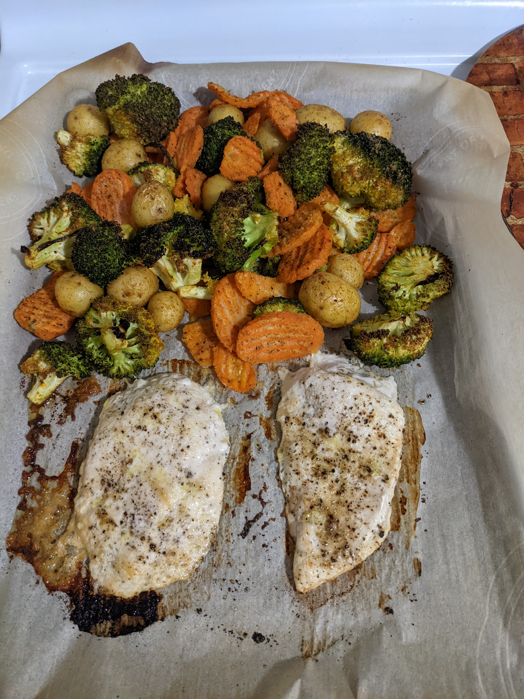

Pan Baked Chicken and Vegetables

Description
A quick and simple meal option with minimal prep but healthy results.
The main focus of this recipe is ease for when you are too tired to cook!
Ingredients
- Chicken Breast (Frozen)
- Broccoli
- Carrots
- Potatoes
- Olive oil
- Spices:
- Salt
- Pepper
- Garlic Powder
- Onion Powder
- Paprika
- Freezer bag
- Parchment Paper
Directions
- Preheat oven to 425° F
- Pour spices in freezer bag
- Place vegetables into freezer bag and shut tight
- Shake bag to spread spice!
- Open the bag and pour in oil, then close and shake
- Place parchment paper on pan
- Put chicken on paper, season as desired
- Place vegetables on parchment paper
- Transfer pan to oven for 20-25 minutes
Return to main page